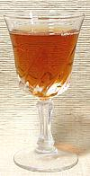

SAFARI
Users
Vinegars
Vinegars are made by fermentation from many foods that have a high sugar or starch content. Fruits and other sugar sources go through a double or triple fermentation: from sugar to alcohol (by yeast) then alcohol to acetic acid (by bacteria). Starchy foods go through either malting (barley) or a starch to sugar fermentation (rice), then sugar to alcohol, alcohol to acetic acid. High grade vinegars will then be aged in wooden barrels or pottery jars to mature the flavors.
With the exception of White Distilled Vinegar, vinegars carry a distinctive flavor from the ingredients used, and are affected by the quality of those ingredients, so taste will not be uniform brand to brand.
Many health and healing claims are made for vinegars, particularly apple cider vinegar, but actual medical research seems to be pretty scarce so the evidence is all "hear-say".
Vinegars. like oils, are very important cooking ingredients and a well prepared kitchen stocks Apple Cider, Rice, Balsamic (Industrial), White Distilled and Wine vinegars, with others added according to individual taste and ethnicity of the cuisine.
Apple Cider Vinegar
- [Aceto di Mele (Italy); Apfelessig (German)]
Made from apples fermented into hard cider, this vinegar is quite popular in North America - but beware! Most of what tries to pass as "Apple Cider Vinegar" in the stores is nothing of the kind. Look carefully and you will find it's made from white distilled vinegar with apple juice added - it's just "apple flavored" vineger. Even the leading brand, Heinz, is real in quart bottles or smaller, and fake in larger containers.
Apple cider vinegar has a large cult following among the health conscious, and many extreme claims are made for it. Unfortunately, little actual medical research has been done, but that which has been done shows modest healthful effects. In any case, it's not likely to do you any harm, unless you over-do it, and many say it helps them. Personally, I'm a great fan of natural vinegars, but not just Apple Cider Vinegar.
Cider vinegar's flavor may not work well with some recipes, and it
may not be appropriate for some ethnic cuisines. Some older ethnic
cookbooks in English call for cider vinegar because they presume you
can't get the right kind. On the other hand, many cultures do use it,
even in regions not noted for apples. The most common in North America
is Heinz brand, available just about everywhere (quart size or smaller).
The photo specimen is Bragg brand, certified organic raw apple cider
vinegar and purified water, 5% acidity, product of USA. This product
is unfiltered and includes sediment (mother of vinegar) in the bottom
of the bottle. Flavorful cider vinegars are also made in France, Italy
and Turkey.
Balsamic Vinegar: "True" & "Industrial"
What is now called "Industrial" Balsamic was probably the original version from ancient times, wine vinegar sweetened with grape must. It has evolved into the very expensive Aceto Balsamico Tradizionale, made in a series of barrels and aged at least 12 years. "True" Balsamic is made only in Modena and Reggio provinces in northern Italy, and most "Industrial" is also made in that region. "Industrial" balsamic is used throughout Italy and the world as an important recipe ingredient. "True" balsamic is used by the drop as a special condiment.
Condimento Bianco is a variation of "industrial" balsamic made from white wine vinegar and white grape must, and filtered. It may be clear or light amber, and is used in salads and other applications where the dark color of Balsamic is not desired. Balsamic vinegars are so important they now have their own Balsamic Vinegar page.Cane Vinegar
This vinegar is made wherever sugar cane is grown, but commercially exported from the Philippines, a land where good vinegar is really appreciated. Cane juice is fermented as if to make rum, but instead of distilling, it is fermented into vinegar. Quality and flavor vary by brand.
To the left in the photo is a natural cane vinegar that is my favorite vinegar. I use it anywhere the color won't be a problem. Datu Puti brand Sukang Iloco (Native (natural) Vinegar). The ingredient list is: "Naturally fermented from sugar cane juice". It was purchased from a Philippine market in Los Angeles (Eagle Rock) for 2017 US $1.69 for 25.4 ounces.
The sample to the right is Datu Puti brand Sukang Maasim. Ingredients: cane vinegar, water. I suspect an unstated clouding agent is included in that vinegar - Filipinos seem to expect vinegars to be slightly cloudy. The light vinegar is harsher with a less distinct flavor compared to the dark. Both are 4.5% acidity.
Note that in the Philippines, the famous Iloco vinegar is often
flavored with the leaves of samak
(Macaranga), but the FDA may object to that version here as
Macaranga are spurges, and spurges are commonly toxic. Sukang
Iloco is an ingredient in Vigan Longanisa sausage as well as in many
other regional recipes, and as a dip, and for medicinal purposes
(disinfectant and on the forehead for fevers).
Chinese Vinegars
Chinese vinegar comes in three basic varieties, Black, Red and White. All can be made from rice, but the black may also be made from other grains. Quality variations for Chinese products are extreme. Check the ingredient labeling but be aware it is often as wrong as the grammar in the instructions you get with Chinese products. Best strategy, find a good brand and stick with it.
Black Rice Vinegar [Brown Rice Vinegar, Chinkiang Vinegar, Chekiang vinegar, Chenkong vinegar, Zhejiang vinegar] is particularly popular in southern China. Brands made in Chinkiang (Zhejiang) province are considered the best. Like Balsamic it is dark and has a deep flavor, but the taste is very different. Black vinegar is often used as a dipping sauce. Gold Plum is often recommended as the best brand of Chinkiang and is the one I usually use. Ingredients: water, glutinous rice and salt, 5.5% Acidity.
Ladchen Vinegar is an example of other dark vinegars. The one I have on hand, from China, is made from sorghum, barley and peas. Flavor is quite similar to the Chinkiang, but a shade lighter.
Red Rice Vinegar [Red Rice Vinegar] doesn't look a whole lot redder than the black, but the flavor is much lighter and almost spicy. It is used as a dipping sauce and in soups, with noodles and in seafood dishes. Often recommend brands are Pearl River Bridge and Koon Chun but the one in the photo is Pat Chun. Ingredients: water, glutinous rice, salt, FD&C red #40. Acidity 2.5%.
White Rice Vinegar [Rice Wine Vinegar] is similar to the
Japanese and is used in stir fries, pickles and sweet-and-sour dishes.
It has a more delicate flavor than the others. It is available in regular
and "Gourmet Aged" grades in markets serving an East Asia community. The
photo specimen is the darker "Aged" version, which I hold is very much
worth the higher price, from Kong Yen Foods, Taiwan. Ingredients: rice,
malt. Acidity above 6%.
Coconut Vinegar
- [Sukang Niyog (Philippine)]
Coconut vinegar is used in India and Southeast Asia, including the
Philippines. It is mild with a somewhat musty flavor. The photo shows a
naturally fermented vinegar that has an almost smoky flavor. Ingredients:
coconut water. The sample on the right has a less distinct flavor.
Ingredients: natural vinegar, water, 4% acidity. I suspect there is also
an unstated clouding agent, as Filipinos seem to expect vinegars to be
somehat cloudy. Both are products of the Philippines. Coconut vinegar
can be found in markets serving a Philippine community (around here
there's one near every major hospital).
Coconut Sap Vinegar
- [Sukang Tuba (Philippine)]
This vinegar is naturally fermented from the same flower sap that coconut
sugar is made from. The cloudiness is natural, and there is some sediment
(mother of vinegar) in bottom of the bottle. This is a premium vinegar,
to be used as a dip and in salad dressings. It is aromatic and has a
vague sweetness. It was purchased from a Philippine market in Los
Angeles (Eagle Rock) for 2019 US $3.99 for 25.4 ounces (750 ml). 100%
Pure Suka Tuba. Mr. Pinakurat brand, product of the Philippines.
Date Vinegar
- This vinegar is popular in the Near East, but I haven't noticed it here in Los Angeles - I'm sure it's here somewhere, I'll just have to look more carefully.Flavored Vinegars
These are generally white or red wine vinegar with herbs and spices added
to the bottle, or infusions added to the vinegar. The objective is to capture
the flavors in an easily usable form. Tatragon vinegar is probably the
best known. Since the flavor of tarragon doesn't survive drying, vinegar is
a way to deliver that flavor when fresh tarragon isn't available. Note that
there are health risks to doing these yourself, so it's generally better
to purchase them. The photo sample is Heinz Tarragon Vinegar. Ingredients:
distilled white vinegar, malt vinegar, spice oil (tarragon), water, 5%
acidity.
Fruit Vinegars
Since vinegar can be made from anything with sufficient sugar, and since it
takes on flavors from the ingredients from which it is made, the field is
wide open for production of specialty vinegars. Examples are Pomegranate,
Orange and Raspberry vinegars. The photo sample is Pineapple vinegar,
very nice for salads
Grape Vinegar
- [Raisin Vinegar]
This is wine vinegar made in Islamic countries where you'd roast in Hell for eternity if Allah saw you were making wine - but you can't make vinegar without making alcohol first. Some of it's pretty good wine vinegar too. Somehow the Turks got a special dispensation from Allah because they make and consume alcoholic beverages (either that or they're all going straight to Hell with the rest of us), but for the rest of Islam it's forbidden.
This vinegar is generally made in a single multi-stage process so the
makers can't be accused of making wine. Note that during the (long, long
passed) height of Islamic culture, wine was made and enjoyed in countries
where you'd be flogged or beheaded for it today. The photo specimen is
from Syria. Ingredients: grape vinegar, water. As to the strength, the
label says "Natural %", obviously not designed by an English speaking
person.
Kachampuli
- [Kaachambuli]
This is the "vinegar" of the Kodava (Coorg) people in southwest India. It
is made from slightly fermented juice of
Gummi-Gutta fruit, simmered down to a very dark red-purple sour, but
also fruity, syrup. It is on hand in every Kodava kitchen, and sold
commercially in the region, but not much elsewhere. Details and suggested
substitutes can be found on our Details and
Cooking page.
Lemon Vinegar
- [Lemon Sirkesi]
Yes, even lemons have enough sugar to ferment into vinegar. This product
definitely has a lemon flavor, but also a vinegar flavor. The photo sample
was made in Turkey. Ingredients: lemon vinegar, acid regulator (citric acid),
lemon emulsion, antioxidant (sodium metabisulfite), natural lemon flavor.
Malt Vinegar
This is a premier dipping vinegar (as in English fish and chips) because its
effect is less harsh than other common vinegars. I used to use a lot of it
before I settled on the naturally fermented Sukang Iloco,
but I still use it for specific recipes. Malt vinegar is properly made by
malting (sprouting) barley (and perhaps other grains) to turn the starches
to sugar. The malt is then fermented into ale, and the ale fermented into
vinegar. Here in Los Angeles very few markets carry it, but many restaurant
supply stores do - to supply British style restaurants. The photo sample,
from Smart and Final, boasts ingredients: malt vinegar, water, 5% acidity.
Palm Vinegar
- [Sukang Paombong (Philippine)]
Sukang Paombong is another of the fine vinegars made in the Philippines.
with a rich flavor and 4.5% acidity. Ingredients: fermented nipa palm sap,
water, cloudifier. Interesting, though "cloudifier" is mentioned, it is much
less cloudy than other Philippine vinegars that do not declare one.
Raisin Vinegar
- see Grape Vinegar.Rice Vinegar
- [Rice Wine Vinegar]In the U.S. this generally means Japanese or Japanese style white rice vinegar of "Industrial" quality (see also Chinese Vinegars for red, black and white versions). Rice vinegar is made by fermenting rice into beer which ferments into vinegar (though it's a single continuous process that doesn't make drinkable sake).
In Japan top grade rice vinegar is made in small batches in clay jars,
but that commonly available in the U.S. is an undistinguished industrial
product. It's good enough for many common uses and has the advantage of
being affordable by mortals - but the photo specimen is Aged Chinese white
rice vinegar which I much prefer (the common product is lighter in color).
Spirit Vineger
This product is the same thing as American "White Distilled Vinegar",
but in Europe it is often sold at an acidity of 25%. That most available
in North America is from Germany, sold as Essig Essenz 25%, available
for on-line ordering and from some Central or Eastern European delis.
Higher than 5% strength is required by some recipes for pickled herring,
and this can be achieved by diluting the 25% with water. It is made
from 95% (190 proof) alcohol, usually produced from sugar beets, but
many other sources may be used, such as sugar cane, corn and other grains.
White Distilled
This product, called "Spirit Vineger" outside North America, is made
from alcohol (ethanol) which has been distilled to 95% (190 proof), or
it can be produced by industrial means from ethylene gas. The USDA
requires that any vinegar sold for human consumption be naturally
fermented from the alcohol, but does not specify what the alcohol is
made from (sugar beets, sugar cane, corn sugar, grains, etc.). After
fermentation, the vinegar (acetic acid) is diluted with water, properly
to 5% acidity. Some cheap vinegars may be 4%, the lowest allowed by
law (and not satisfactory for most uses). It's purely an industrial
product, but a good choice for many uses (in the water for poaching
eggs, for instance) because of it's purity, lack of flavors other
than acetic acid, and very low price. White Distilled Vinegar also
finds a wide variety of household cleaning and deodorizing uses.
Wine Vinegars
As the name implies, these vinegars are made from wine. Naturally, they vary greatly with the quality of the wine used and the process. Once again we have that contrast between traditional (good wine and aged in oak barrels) and industrial production, and this is reflected in the price. High grade wine vinegars are made in Italy, Spain and in the wine growing regions of California. Many California wine vinegars are "artisanal" single varietal products so tend to be a bit upscale, pricewise. I've seen none from France around here. I'm sure they fetch a good price over on the West Side, San Francisco and New York - but I see WalMart sells some for around US $28 for 500ml - that's a lot more than most of the California vinegars.
Red & White Wine Vinegar
Under these names are general purpose wine vinegars for every day use. They vary considerably in quality, with major brand name products from American manufacturers generally at the bottom of the barrel, so to speak. Select a brand you like that you can get consistently in bottles of appropriate size for you usage. For general everyday use I buy L'Aretino, an Italian import that's pretty good at an acceptable price for both red and white.
Champaign, Merlot, Cabernet, etc.
Single varietal wine vinegars are generally traditionally made and exhibit the qualities of the wines they are made from. California wine vinegars are predominantly of this type. They are, of course, at a higher price, so should be reserved for more sophisticated sauces and dressings where their distinctive qualities will be evident.
Chianti Vinegar
- an excellent and quite distinctive deep red varietal wine vinegar (at least the brands I've tried have been). It is made of Chianti D.O.C.G wine and is generally shipped at an acidity of around 7.5%, considerably higher than most wine vinegars so adjust recipes to suit.Sherry Vinegar
Once this was given away by embarrassed sherry wine makers when a batch went bad, then somebody decided it could be sold. Now it's considered the king of wine vinegars, is highly prized and will carry a certificate of origin logo. It's also more expensive than most other wine vinegars. Like balsamic, it goes through a series of barrels, but that's in the wine stage. It will have further aging in barrels after being converted to vinegar. Caution: sherry vinegar is usually about 8% (8°) acidity, considerably stronger than other vinegars which tend to average 4% to 5%. Adjust your recipe whenever substituting one for the other.
Other Souring Agents
Lemon Juice - Lime Juice
 Lemons and Limes provide sourness through their content of citric acid.
Their flavors do, however, differ somewhat, so the appropriate citrus should
be used in recipes. Limes are a tropical and subtropical fruit. Lemons are
a subtropical and temperate fruit. Which one you should use depends on the
climate of the cuisine's origin. Many older cookbooks specify lemon juice
where lime juice would be more appropriate because in times past limes were
not nearly as available in North America. Persian (Tahiti) limes and Key
Limes are effectively the same, except you get a lot more juice out of a
Persian.
Lemons and Limes provide sourness through their content of citric acid.
Their flavors do, however, differ somewhat, so the appropriate citrus should
be used in recipes. Limes are a tropical and subtropical fruit. Lemons are
a subtropical and temperate fruit. Which one you should use depends on the
climate of the cuisine's origin. Many older cookbooks specify lemon juice
where lime juice would be more appropriate because in times past limes were
not nearly as available in North America. Persian (Tahiti) limes and Key
Limes are effectively the same, except you get a lot more juice out of a
Persian.
Citric Acid
Citric acid, in colorless crystalline form, is easily available and cheap. For uses were flavor is not an issue, as in the water that keeps cut apples and artichokes from browning (don't use it for potatoes, acid hardens them), it is much more convenient than actual lemons. Note that citric acid is much more effective than vinegar for preventing browning and similar uses.
Amchur
- [Amchur powder, Green Mango; Mangifera indica]
This is a popular souring agent in India, particularly in dry regions
where lemons and limes cannot be had. Being dry it has the advantage of
being easily stored and transported. Called for by many recipes from
northern India, it is very sour with a slight sweetness and just a bit
resinous. Use it for marinades where it has the same tenderizing effect
as lemon juice (1 teaspoon amchur powder is equivalent to 3 tablespoons
lemon juice) and in curries. It is available both in powdered
form as shown, and as dried chunks of mango. It is available in markets
serving an Indian community.
Sour Plum
Sour plums are the sweet / sour of choice in Georgia (former Socialist Republic). Apparently they have purple ones there, but the sour plums seasonably available here in Los Angeles are green. I like to snack on them, crunchy and moderately juicy, sweet and sour. Dried ones, which are available for a longer season, are about the color of unsulfured apricots.
Peak availability of fresh sour plums in California is in May. They are
picked unripe, but fully hardened seed and tendency to ripen to yellow
demonstrate these are not simply regular plums picked while still very small.
They are typically between 1 inch and 1-1/2 inches in diameter and weigh
about 3/4 ounce each.
Sumac
This is a very popular, but fairly mild, souring agent in the Near East, sold alone and as a component of herb mixes, particularly with thyme (Zatar). Caution: Don't try to make this at home. American Sumac is not the same variety and can cause allergic reactions and poisoning. Sumac is available in markets serving a Near or Middle Eastern community.
 Tamarind is from a large bean pod born by the Tamarind tree. The large brown
seeds are surrounded with a sticky paste that is both sweet and sour. Though
of African origin, it is immensely popular in India and Southeast Asia.
It is also used in Africa, and now in Mexico and Central America as well.
It is easily available in several forms in just about any Asian or Latin
American market. For more information on this important tree see our
Tamarind page.
Tamarind is from a large bean pod born by the Tamarind tree. The large brown
seeds are surrounded with a sticky paste that is both sweet and sour. Though
of African origin, it is immensely popular in India and Southeast Asia.
It is also used in Africa, and now in Mexico and Central America as well.
It is easily available in several forms in just about any Asian or Latin
American market. For more information on this important tree see our
Tamarind page.
Umeboshi Vinegar
- [Umezu, Ume su (Japan)]
Technically not a vinegar, but a pink brine with a sour-fruity taste. This is a by-product from manufacturing Japanese pickled plums (umeboshi), which are themselves extremely sour. Basically, it is a nearly saturated solution of sea salt, made sour and given a lightly fruity flavor from preserving unripe plums in it. It is given a light reddish color by sisho (perilla) leaves. It can be used much as a vinegar would (keeping the high salt content in mind). It's considered good for use in salad dressings, and especially for flavoring steamed vegetables.
Umeboshi Vinegar has been adopted by the Michio Kushi Macrobiotics
sect and by several other health food sects as a miracle health
ingredient - if you can consider anything that salty to be healthy (1
teaspoon contains 44% of the recommended daily value for sodium). The
Macrobiotics people say it's very popular in Japan, a point which my
23 Japanese cookbooks have apparently all missed, completely.
Verjuice
- [Verjus]Not vinegar, but used in a similar way, verjuice is the juice of unripe grapes. It is essential for reconstructing Medieval and Renaissance recipes from before vinegar production was reliable. It used to be almost impossible to find in the U.S. but is now being turned out by California wineries.
The photo specimen was made by me from unripe grapes purchased from a
multi-ethnic market serving Anatolian, Caucasian and Near and Middle Eastern
communities. The grapes were simply ground up in a food processor, strained
and frozen for future use. It is very sour and somewhat fruity.
Details and Cooking.
- V1 - General info and store selling exotic varieties - Vinegar Connoisseurs International
- V4 - The Vinegar Institute - a trade organization of vinegar manufacturers with some general information.
- V6 - Parma Shop - Italian specialties shipped from Italy.